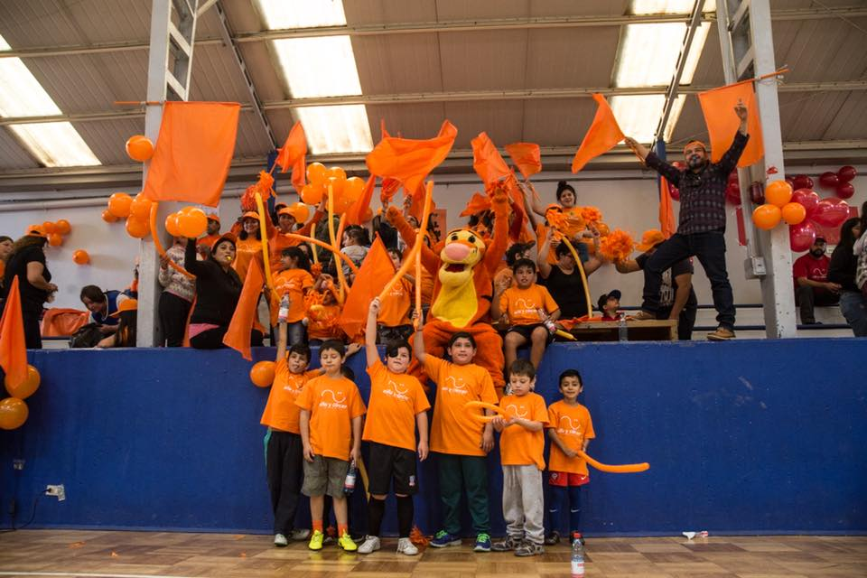
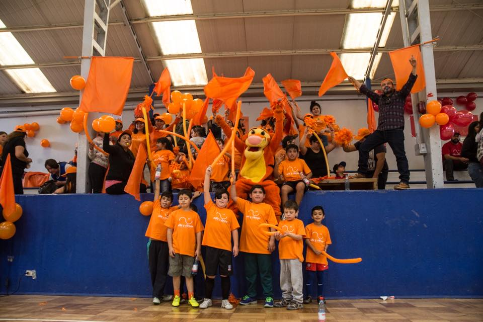

El objetivo de este proyecto es beneficiar a jóvenes recuperados de cáncer con becas cadémicas, para lograr la continuidad de estudios pendientes y obtener una profesión futura y reinserción en la sociedad.
Las becas podrán atender a los jóvenes con estudios universitarios, técnicos profesionales o de centros de formación técnica. Así también podrán tener alcances parciales y en ocasiones especiales, totales.
El año 2018 se otorgaron un total de 28 becas de las cuales 15 corresponden alumnos antiguos y 13 son para alumnos que inician sus estudios superiores este año 2018.
Para que estas becas sean bien utilizadas, sean objetivas y sean supervisadas, elaboramos requisitos básicos y similares a los utilizados en el resto de las instituciones que entregan estos beneficios.
Para mayor información o en caso de cualquier duda, consultar a:
Carolina Escudero P.
Asistente del Directorio
Fundación Niño y Cáncer
fundacion@ninoycancer.cl
Fono: +56 2 2217 0821- +56 2 2217 0820
Una noche de música, sorpresas y generosidad
Con gran éxito se desarrolló nuestra Tallarinata de Amor y Sonrisas el 30 de agosto en el Estadio del Banco Central.
La velada estuvo animada por nuestro amigo y permanente colaborador Checho Hirane, además de contar con la extraordinaria presentación de Andrea Tessa y otros artistas invitados.
Agradecemos a todos los asistentes que compartieron, donaron dinero y tiempo a esta noble causa, cuyo principal objetivo es entregar una vida más llevadera a los con cáncer atendidos a en los hospitales públicos de nuestro país.
Empresas y colaboradores especiales que realizaron donaciones y regalos que hicieron posible llevar a cabo este evento:
Estadio del Banco Central, Antofagasta Minerals S.A., Nahmias Desarrollo Inmobiliario, A3D Chile, Radisson Blu, CCU, Falabella, Agencia One Stop, Aerolínea Sky, Trendy, Ópticas GMO, Rotter y Kraus, Therapy Boutique, Doc Popcorn, Tienda Ditego, Carola González - Boutique, Baños del Corazón, Paris Alto Las Condes, Hotel Presidente, Mario Moure - Perfumes, L’Oréal, Interdessign, Farmacias Knop, Tamango, Cocina de Javier, Pastelería Las Hermanas, Tiendas Corona, Laboratorio Valma, Ellus, Iregua, Hotel Regal Pacific, Hotel Kennedy, Textiles Lanabel, Cinemark, Hotel Plaza San Francisco, Coco Legrand, La Fête, Viña Cousiño Macul, Tutte Matute, Donde Gilberto, Mister Jack, Bow Spa, La Rambla, Stefan Joyero, Salón Mauricio Jiranek, Mery Satt, Laboratorio Prater, Lounge, AB Küpfer Pisos, Hotel Frutillar, Ti-5, Óptica Tabancura, Boutique R4, Alonso Olive Oil, AHF joyas.
Y especiales agradecimientos a los voluntarios, socios, directorio, amigos y todos los que de una u otra menera se involucraron para hacer posible el éxito de nuestra Tallarinata de Amor y Sonrisas.
Montaña de Alegría
Proyecto recreativo y psicoterapéutico que se realiza desde el año 2002.
Se traduce en "Una Terapia para el Alma".
Se realizó como todos los años en Portillo del 21 al 25 de agosto y contó con la participación de 7 jóvenes chilenos, 2 ecuatorianos y 1 de España. Todos amputados de una extremidad inferior, como secuela de su enfermedad.
El objetivo de este Programa es demostrar a los participantes, que su impedimento físico no los limita para plantearse y superar desafíos, tales como el aprender a esquiar y que con optimismo y fuerza lograrán todos los objetivos que se propongan en su vida.
El coordinador responsable y voluntario de la FNyC es Patricio Morandé, instructor de ski, que también sufrió una amputación producto del cáncer siendo muy joven. Participó en las Olimpiadas para Discapacitados organizadas en Salt Lake City (EE.UU.) el año 2002, en la que obtuvo el puesto N°11.
Fueron acompañados durante los 5 días que permanecieron en Portillo, por la Voluntaria de la FNyC y sonrisóloga Susana Alegría, Psicóloga.
La Fundación Niño y Cáncer cubrió todos los gastos: alojamiento, alimentación, instructores de ski, traslados, equipos especiales y vestimenta adecuada (ropa térmica, antiparras, cascos, guantes, botas, entre otros).
 
